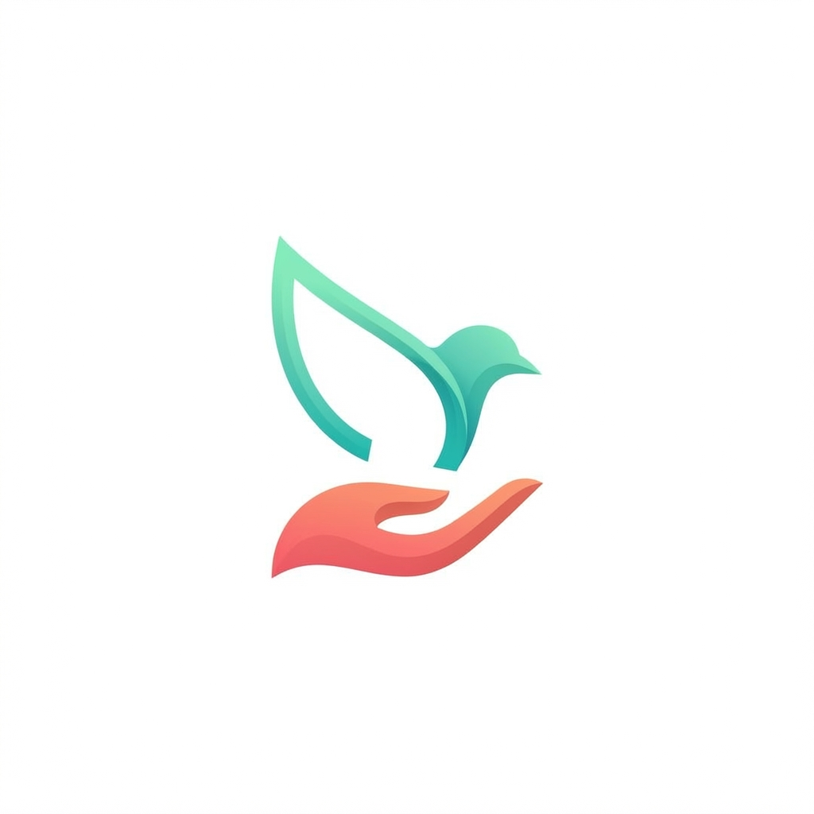

Design Mockups — v3.0 · Mars 2026
Exploration prospective : comment Givernance évoluerait vers un paradigme agentique et conversationnel dans 2-3 ans. Interface naturelle, orchestration d'actions complexes, autonomie contrôlée.